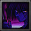

Season 1 archive · Go to active Season 2 →
← All playersPlayer profile
kakak
Rank #56server.eurobattle.netSeason 1
Most played · Shirosaki
Matches5216 wins · 36 losses
Win rate31%
Avg K / D / A38.9 / 39.4 / 10.2
Avg APM158
Avg damage dealt231.7k
Avg damage taken165.4k
Heroes played
Explore heroes →| HERO | MATCHES | WIN RATE | AVG K / D / A | AVG DMG |
|---|---|---|---|---|
ShirosakiMost played | 8 | 25% | 38.0 / 39.5 / 11.1 | 243.9k |
チェンソーマン | 7 | 29% | 45.1 / 36.6 / 7.7 | 257.8k |
Ragna | 6 | 50% | 44.0 / 35.3 / 7.3 | 249.7k |
The One Who Stands Above All | 3 | 33% | 31.3 / 44.3 / 12.7 | 146.4k |
黒崎 一護断界 | 2 | 0% | 37.5 / 38.5 / 11.0 | 236.3k |
The Last Future of Embryo | 1 | 100% | 55.0 / 24.0 / 11.0 | 302.7k |
Future トランクス | 1 | 100% | 54.0 / 34.0 / 8.0 | 275.5k |
Kiryuu Sento | 1 | 100% | 39.0 / 34.0 / 20.0 | 216.4k |
千子村正 | 1 | 100% | 43.0 / 42.0 / 13.0 | 286.4k |
Blade | 1 | 100% | 37.0 / 52.0 / 11.0 | 206.6k |
『黑猫』 | 1 | 100% | 43.0 / 37.0 / 21.0 | 255.3k |
Tokinada Tsunayashiro | 1 | 100% | 29.0 / 28.0 / 12.0 | 218.0k |
ミサカ ミコト | 1 | 100% | 54.0 / 35.0 / 12.0 | 277.2k |
Kula | 1 | 0% | 44.0 / 39.0 / 7.0 | 281.6k |
『星の理』 | 1 | 0% | 34.0 / 42.0 / 9.0 | 201.5k |
【完全で瀟洒なメイド】 | 1 | 0% | 22.0 / 54.0 / 10.0 | 192.4k |
仮面ライダークロノス | 1 | 0% | 32.0 / 37.0 / 4.0 | 190.0k |
不明なる共演者 | 1 | 0% | 41.0 / 52.0 / 6.0 | 238.7k |
《氷結の魔女》 | 1 | 0% | 6.0 / 31.0 / 8.0 | 134.1k |
Ryougi Shiki | 1 | 0% | 32.0 / 32.0 / 20.0 | 173.0k |
 KenshinEx | 1 | 0% | 34.0 / 50.0 / 8.0 | 204.7k |
Keqing | 1 | 0% | 41.0 / 56.0 / 16.0 | 262.9k |
仮面ライダーカブト | 1 | 0% | 27.0 / 15.0 / 6.0 | 127.8k |
デンジ | 1 | 0% | 37.0 / 49.0 / 8.0 | 265.9k |
Itsuka Kotori | 1 | 0% | 39.0 / 42.0 / 12.0 | 280.2k |
Lucia | 1 | 0% | 45.0 / 43.0 / 9.0 | 286.3k |
Aoi no Hono Senshi | 1 | 0% | 34.0 / 49.0 / 14.0 | 194.3k |
Mastered Ultra Instinct Powered | 1 | 0% | 42.0 / 41.0 / 9.0 | 236.6k |
Seha Lee | 1 | 0% | 28.0 / 43.0 / 9.0 | 207.4k |
ロロノア・ゾロ | 1 | 0% | 24.0 / 48.0 / 12.0 | 117.9k |
黒崎 一護 | 1 | 0% | 52.0 / 47.0 / 9.0 | 248.1k |
Averages use recorded statistics only; unavailable historical values are shown as —.
Recent matches
Open a match for its scoreboard and kill matchups.
LOSS66:17
MCB #2000161
19 Oct 2026 · 00:57 WIB
41.0 / 47.0 / 9.0View match →
WIN60:17
MCB #2000159
18 Oct 2026 · 00:04 WIB
55.0 / 24.0 / 11.0View match →
LOSS56:38
MCB #2000150
12 Oct 2026 · 19:24 WIB
44.0 / 40.0 / 10.0View match →
LOSS60:51
MCB #2000146
11 Oct 2026 · 18:07 WIB
44.0 / 39.0 / 7.0View match →
LOSS56:41
MCB #2000145
11 Oct 2026 · 16:49 WIB
34.0 / 42.0 / 9.0View match →
LOSS62:02
MCB #2000143
10 Oct 2026 · 23:08 WIB
22.0 / 54.0 / 10.0View match →
LOSS55:27
MCB #2000138
08 Oct 2026 · 20:00 WIB
32.0 / 37.0 / 4.0View match →
LOSS56:41
MCB #2000134
07 Oct 2026 · 20:27 WIB
41.0 / 52.0 / 6.0View match →
LOSS40:14
MCB #2000133
07 Oct 2026 · 19:05 WIB
6.0 / 31.0 / 8.0View match →
LOSS52:04
MCB #2000132
07 Oct 2026 · 17:49 WIB
32.0 / 32.0 / 20.0View match →